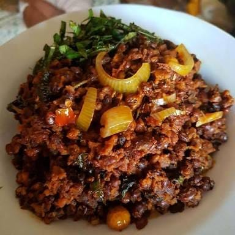

FioFio Recipe Preparation From scratch
Fiofio also known as Agbugbu is a delicacy from the Eastern part of Nigeria, The IBO Tribe,
It is a delicious specie of beans that can be made in various ways and is usually combined with another traditional meal called Achicha,
it can also be combined with yam. In this Preparation we are going to learn how to prepare it with Yam.

Store bought fiofio
yam
Palm Oil
Seaoning cube
Fresh peppers
Onions
Potash
Ugu
Crayfish
Salt
Directions
Step 1
Wash your fiofio and set aside nrikwo nrikwo,
Step 2
Place a pot on fire and pour in enough water that will cover the fiofio
Step 3
Now, add your fiofio and allow to cook
Step 4
Peel your yams, wash well and slice in small sizes
Step 5
When your fiofio is almost soft, add the sliced yams to the pot of fiofio
Step 6
When your fiofio and yams are now soft, remove from fire and seive out the water, then set aside
Step 7
Slice your onions, grate the peppers, wash your ugu and blend your crayfish and set all aside in different plates
Step 8
In another pot, pour in your pal oil, sliced onion and allow to stir for 1 minute
Step 9
Next, add your peppers, seasoning cube, crayfish, salt to the fryiong pan of palm oil, stir continuosly for 2 minutes
Step 10
Now add your fiofio and yams into the frying pan of oil and spices and mix properly for 1 minute
Step 11
Lastly add in your sliced ugu leaves and mix well, once the ugu is as soft as you like, remove from fire and serve hot